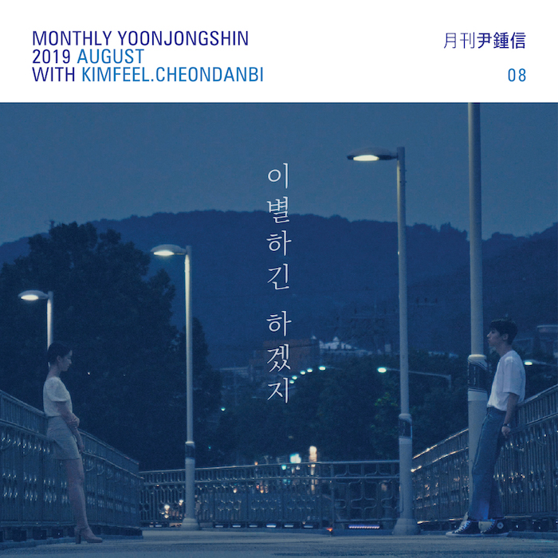

안녕하요 라보엠입니다.
매달 곡을 하나씩 발표하는 뮤지션이 있습니다. 가수 윤종신은 월간 윤종신이라는 어찌보면 말도 안되는 프로젝트를 지금까지도 꾸준히 이어오고 있으며, 하나의 브랜드가 되었습니다. 수많은 윤종신의 노래중에 제가 가장 좋아하는 노래는 너에게 간다인데 이 노래는 다음에 소개하기로 하고 오늘은 2019년 월간 윤종신 8월호 이별하긴 하겠지를 소개해드리려고합니다.
[MV] 2019 월간 윤종신 8월호 - 이별하긴 하겠지 (With 김필, 천단비)
김필과 천단비의 목소리가 안재홍과 소주연 이별하는 이 두 연인의 모습에 담겼습니다. 애틋하며 설레이던 연인의 모습에서 권태기의 연인으로 변하는 이야기가 대사 없이도 잘 담겨 있고, 애절한 김필과 천단비의 목소리가 헤어질 수 밖에 없는 연인의 마음을 잘 표현한 노래입니다. 팝스타일 곡에 빠질 수 없는 색소폰에 멜로우 키친이 참여해 노래의 화룡점정을 찍으며 더 애절하게 만들었습니다.
Release Note
2019 월간 윤종신 8월호 - 이별하긴 하겠지
[8월호 이야기]
“이별이 끝인 줄 알아?”
2019 [월간 윤종신] 8월호 이별하긴 하겠지는 버티는 이별에 대한 이야기이다. 서로에 대한 지루함과 피로감 속에서 관계를 정리하는 사람들, 서로에게 습관이 되기보단 추억이 되기를 선택한 사람들, 이제는 이별 밖에는 달리 방법이 없다는 걸 알아버린 사람들, 끝날 듯 끝나지 않는 불안한 이별 속에 놓인 사람들. 그런 사람들의 마음이 이 노래를 가득 채운다. 지난 7월호부터 시작된 ‘윤종신 발라드 속 이별남 전격 해부 4부작’의 두 번째 곡으로 7월호 ‘인공지능’에서 AI가 충고를 건넸던, 완전히 헤어지지 못하는 그 연인의 양상이 보다 구체적으로 담겼다.
“자주 싸우면서도 오래 관계를 이어나가는 연인들이 있어요. 끌리는 것과 안 맞는 것이 공존하기 때문에 어떻게든 관계를 이어나가는 거죠. 신기하게도 끌리는 것과 안 맞는 것은 공존할 수 있거든요. 그리고 공존의 과정을 함께 겪으면서 서로를 견딜 수 있는 힘이 생기죠. 그러한 힘이 생겼을 때 비로소 결혼을 선택하는 사람들도 많고요. 이번에는 이별마저 버티는 사람들의 모습을 보여주고 싶었어요. 버티는 힘으로 이뤄지는 관계들, 이별을 예감하지만 아직 이별하지 못한 사람들, 어느덧 권태마저도 습관이 되어버린 사람들, 절대로 말끔하게 끝나지 않는 이야기들…… 아마도 그게 현실적인 우리의 이별이겠죠.”
이 곡은 90년대를 풍미했던 정통 듀엣 팝 발라드를 표방한다. 감미로운 멜로디와 폭발적인 가창력으로 우리들의 가슴을 먹먹하게 했던 그 당시의 팝을 재현했다. 마치 실제로 이별을 앞둔 연인처럼 노래하는 듀엣 발라드 특유의 드라마성이 이 노래에도 가득하다. 윤종신은 가사를 쓰기 전부터 이 노래의 가창자로 김필과 천단비를 떠올렸다. 두 사람만큼 ‘팝 발라드’에 최적화된 목소리는 없을 것 같다는 생각 때문이었다.
“김필과 천단비는 제가 〈슈퍼스타K〉를 통해 만나본 모든 보컬리스트 중에 가장 ‘팝스타일’이 강해요. 두 친구는 거의 정반대라고 표현할 수 있을 정도로 스타일이 다른데요. 먼저 김필 같은 경우는 무엇을 부르든 자기 색으로 바꿔버리는 스타일이고, 천단비의 경우는 프로듀서가 원하는 색깔을 정확히 구현해내는 팔색조 같은 스타일이거든요. 개성이 다른 두 보컬이 노래 속 연인처럼 멀어질 듯 멀어지지 못하는 그 느낌을 표현해내는 게 무엇보다 중요했어요. 두 친구 덕분에 곡이 무척이나 근사하게 완성된 것 같아서 감사한 마음입니다.”
이별하긴 하겠지의 뮤직비디오는 전체 2부작으로 구성된 이별 드라마의 1부에 해당된다. 8월호로 공개되는 1부가 ‘이별을 향해 달려가는 어긋남의 시간’을 담았다면, 9월호로 공개되는 2부에서는 ‘이별의 상처를 들여다보는 성장의 시간’을 담아낼 예정이다. 비하인드더씬의 감독 이래경이 연출하고, 배우 안재홍과 소주연이 출연했다.
[Music]
Lyrics by 윤종신
Composed by 윤종신 강화성
Arranged by 강화성
E.piano by 강화성
Keyboards by 강화성 신정은
Rhythm programming by 신정은
Guitar by 홍준호
Saxophone by 멜로우 키친
Recorded by 정재원(@STUDIO89) 이창선(@Prelude studio)
Mixed by 김일호(@STUDIO89)
Mastered by Stuart Hawkes(@Metropolis Studio)
[Music Video]
출연 안재홍 소주연
제작 월간 윤종신
감독 이래경
조감독 권민경
연출부 이승주 조성우 노지훈
촬영감독 윤인모
촬영팀 김남일 류재환 임희주 김현지
조명감독 하영신
조명팀 한제승 권훈호 김대진 김태영
미술감독 양미미
미술팀 이소영 이회진
헤어&메이크업 임아실
헤메팀 김단비
스타일리스트 김성범
의상팀 김지수
월간 윤종신 이별하긴 하겠지 가사
(김필)
우리 잘 한 거 맞겠지
너무 힘들었던 이별 약속
너무도 고생 많았어
그래야만 하는 걸
받아들인 그 순간까지
(천단비)
모든 게 힘들었잖아
수 많았던 아파했던 그날들
그렇게 반복되던
우리들의 날들이
이제는 끝나는 걸까
우린 할 수 있을까
이별 하긴 하겠지
과연 지울 수가 있을까
우리 거쳐 갔던 감정들
서롤 너무 잘 알던 그 느낌
그 감촉들이 잊혀질까
점점 무뎌지긴 하겠지
각자 삶 속으로 가겠지
애써 보다 보다 안되면
그땐 어떻게 할까
난 모르겠어
당장 너 없는 내일
어떨까 어떨까
이 불안한 약속
이 불안한 다짐
안녕
(천단비)
여리게 떨렸던 안녕
진짜 마지막이라서 그럴까
지나간 시간 속에
그 안녕들과 달라
그 목소리가 여전히
내 귓가에 남아
이별 하긴 하겠지
과연 지울 수가 있을까
우리 거쳐 갔던 감정들
서롤 너무 잘 알던 그 느낌
그 감촉들이 잊혀질까
점점 무뎌지긴 하겠지
각자 삶 속으로 가겠지
애써 보다 보다 안되면
그땐 어떻게 할까
난 모르겠어
당장 너 없는 내일
버틸 수 있을까
견뎌낼 수 있을까
애써 살다 살다 언젠가
이별이 다 끝나면
잘한 거라고
우리 오늘 결정을
믿어요 믿어요
이 불안한 약속
이 불안한 다짐 안녕

월간 윤종신 <月刊 尹鍾信> - YOONJONGSHIN
YOONJONGSHIN
yoonjongshin.com